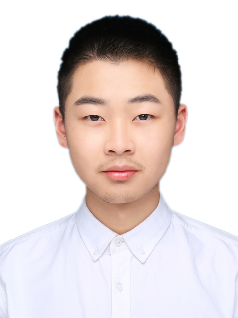

吴熙楠（Xinan Wu）
|  | 本科学生 |
关于我
我目前为北京大学物理学院本科学生，将于2023年7月从北京大学 物理学院获得学士学位。我曾在普渡大学作为访问学者进行了半年的研究，也曾在莱斯大学进行了接近五个月的线上研究工作。
我的研究兴趣主要包括: 纳米材料科学与技术，光电功能材料与器件，低维半导体材料等。
我的兴趣爱好主要有：打乒乓球，唱歌，旅行。
教育经历
 |
本科 北京大学 (2019.9 ~ 2023.7)
|
其他经历
普渡大学访问学者（2022.07-2022.12）
以学生身份参加了the 22nd International Conference on the Science and Applications of Nanotubes and Low-Dimensional Materials (NT22 Conference)（2022.06）
以学生身份参加了2022 MRS Spring Meeting & Exhibit 和 Nature Chemistry Conference（2022.05）
莱斯大学线上科研（2022.04-2022.09）
Yutchun - Weizmann Winter School（2022.01-2022.03）
北京大学本科生科研（2021.03-2022.05）
培尖教育科技公司助教工作（2019/2020/2021.07-2019/2020/2021.08）
学术论文
第一篇正在准备中！
发明专利
暂无
研讨会和演讲
期待作为主讲者参加一次会议！